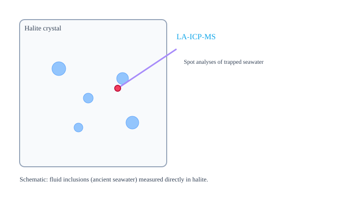
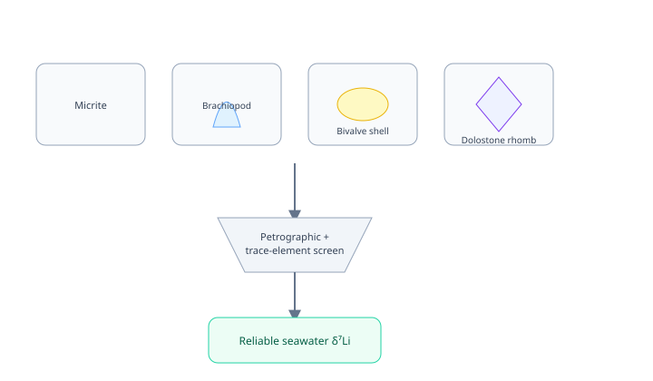
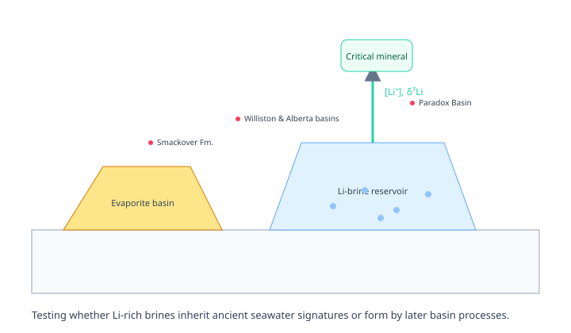
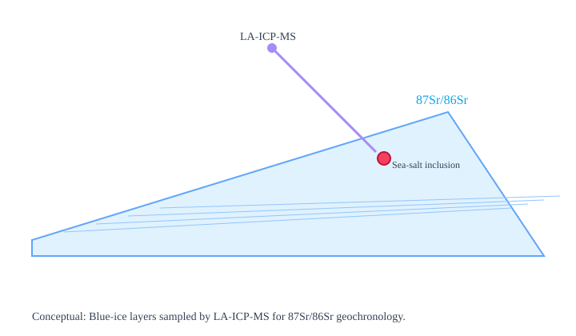
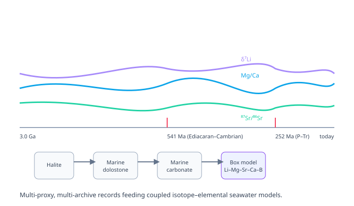
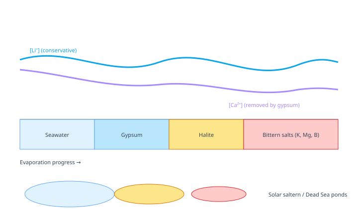
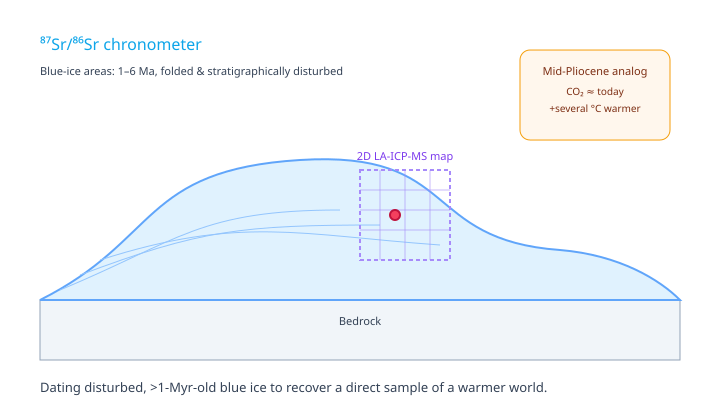

Mebrahtu F. Weldeghebriel, PhDPostdoctoral Research Fellow, Princeton University
Research
My laboratory is organized around one capability applied to many problems: quantitative, micrometer-scale chemistry of the archives that record Earth's surface environment.
Established work
Fluid Inclusions in Halite as Archives of Ancient Seawater Chemistry
Fluid inclusions in marine halite are micrometer-scale droplets of ancient seawater — the most
direct record of ocean chemistry available. From more than 1,300 inclusions across 32 evaporite basins,
I built 550-million-year records of seawater Mg/Ca, Ca²⁺, SO₄²⁻, Sr²⁺, Li⁺, and δ⁷Li.
Fluid inclusionsHaliteTrace elements

Halite crystal with trapped brine inclusions; in-situ spot analyses characterize ancient seawater.
Mass Balance Modeling of Seawater Chemistry and Climate Evolution
A forward box model of the coupled carbon–magnesium–calcium–lithium (C–Mg–Ca–Li) cycles over the
past 550 million years, identifying ocean-crust production tied to the supercontinent cycle as the
first-order control on seawater chemistry and atmospheric CO₂.
Mass balanceModelingIsotopes
Reservoirs and fluxes linking sources/sinks to ocean composition.
A 3-Billion-Year Lithium Isotope Record from Marine Dolostones
Extending the seawater lithium isotope record beyond the Neoproterozoic back toward 3 billion years
using more than 500 marine dolostones — the longest continuous δ⁷Li record assembled to date.
Lithium isotopesDolostonesPrecambrian

Dolostones extend the seawater δ⁷Li record alongside other carbonate and evaporite archives.
Seawater Lithium Evolution and the Origins of Lithium-Rich Brines
Ancient seawater held 5 to 15 times more lithium than today, making evaporated Paleozoic–Mesozoic
seas and the brines derived from them an underexplored, economically important lithium resource.
LithiumCritical mineralsBasinal brines

Evolved seawater preserved in ancient evaporite basins as an underexplored lithium reservoir.
High-Resolution Chemical Imaging and Dating of Ancient Ice Using LA-ICP-MS
Developing a cryo-cell LA-ICP-MS method to chemically image and independently date folded,
disturbed Antarctic blue ice (1–6 Ma), in support of COLDEX's goal of recovering a direct
atmospheric sample from the mid-Pliocene.
LA-ICP-MSSr isotopesBlue-ice areas

Blue-ice stratigraphy sampled by LA-ICP-MS for ⁸⁷Sr/⁸⁶Sr geochronology.
The program I will build: four complementary directions supported by one shared instrumentation base — a triple-quadrupole ICP-MS coupled to laser ablation and LIBS, paired with a clean laboratory for column chemistry.
1 · Proposed direction
Coupled isotope–elemental reconstructions of seawater

Expanding global Li–Mg–Sr–Ca–B–Fe–Mn–V–Mo–U–Cl datasets from halite, dolostones, and other carbonates into multi-element box models, emphasizing transitions like the Ediacaran–Cambrian and Permian–Triassic boundaries.
2 · Proposed direction
Lithium isotopes across carbonate archives
Extending from dolostones to micrites, marine cements, and shells, calibrating how mineralogy and diagenesis control lithium uptake — to make δ⁷Li usable across the Precambrian, where halite is absent.
3 · Proposed direction
Elements & isotopes in evaporating brines

Controlled evaporation experiments and field campaigns at the Dead Sea and solar salt works to measure how Li, Mg, Ca, Sr, B, and Cl isotopes fractionate through the full evaporation sequence — with implications for lithium-rich systems from the Danakil Depression to the Great Basin.
4 · Proposed direction
Cryospheric geochemistry & Pliocene climate

Through COLDEX, extending ⁸⁷Sr/⁸⁶Sr dating and high-resolution chemical mapping of Antarctic blue ice to 1–6 Ma — a direct atmospheric sample from the mid-Pliocene, the most recent interval as warm as the world we are moving toward.